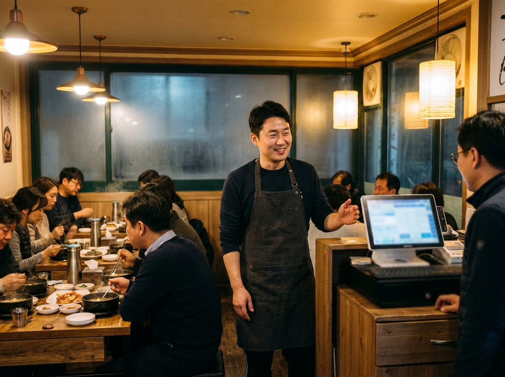
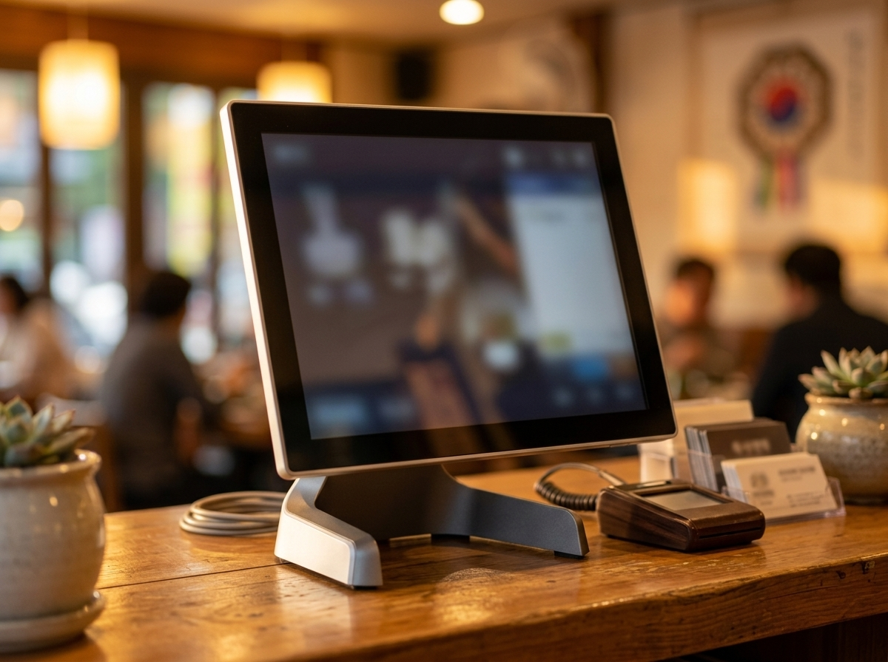
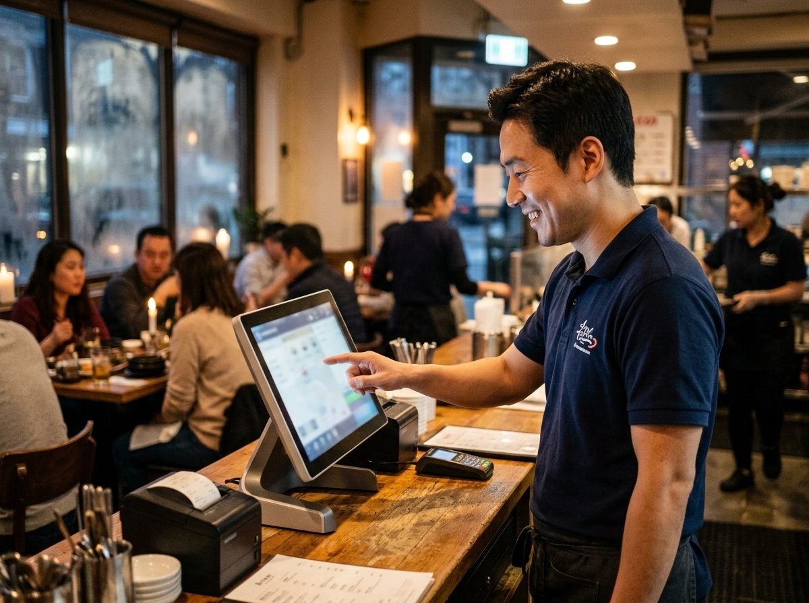

포스기 고를 때 진짜 봐야 할 것, 성능보다 'A/S와 사후관리'입니다
결론부터 말씀드리면, 포스기를 고를 때 가장 중요한 기준은 화면 크기나 사양이 아니라 '고장 났을 때 얼마나 빨리 봐 주는가'입니다. 매장에서 포스가 멈추면 그 순간 계산이 막히고 손님이 기다리며, 곧바로 매출과 신뢰의 문제로 이어지기 때문입니다. 저희 누리네트웍스는 14년간 수도권 3만여 매장에 포스를 직접 설치·관리해 오면서, 오래 잘 쓰는 매장과 자주 속 썩는 매장의 차이가 결국 '사후관리'에서 갈린다는 걸 확인했습니다. 이 글에서는 좋은 포스를 고르는 현실적인 기준과, 고장을 줄이고 오래 쓰는 관리법을 정리했습니다.

포스기, 왜 A/S가 성능보다 중요한가요
포스기는 매장의 심장입니다. 아무리 사양이 좋아도 멈추는 순간 매장 전체가 멈춥니다. 특히 점심·저녁 피크 타임에 포스가 먹통이 되면, 그 몇 분이 하루 매출과 손님 인상을 크게 좌우합니다. 그래서 '얼마나 빨리 정상으로 돌려 주는가'가 포스 선택의 핵심 기준이 됩니다.
문제는 온라인 최저가로만 기기를 들이면, 정작 고장 났을 때 연락이 닿지 않거나 방문까지 며칠이 걸리는 경우가 있다는 점입니다. 저렴하게 샀다가 하루 영업을 통째로 날리면 결코 이득이 아닙니다. 포스는 물건이 아니라 서비스를 함께 사는 것이라는 관점이 필요합니다. 누가, 얼마나 빨리, 어떻게 책임지는지가 기기 사양보다 중요합니다.
좋은 포스를 고르는 5가지 기준
포스를 알아보실 때 아래 다섯 가지를 확인해 보시길 권합니다.
| 기준 | 확인 포인트 |
|---|---|
| 사후관리 | 고장 시 대응 속도·방문 가능 여부 |
| 업종 적합성 | 우리 업종에 맞는 기능 구성 |
| 결제 연동 | 카드·간편결제 폭넓게 지원 |
| 확장성 | 테이블오더·키오스크 연동 가능 |
| 공급 조건 | 정품 여부·투명한 공급가 |
무엇보다 직접 방문해 설치하고 관리해 주는 업체인지를 먼저 확인하세요. 수도권이라면 문제가 생겼을 때 직원이 바로 방문할 수 있는 곳이 든든합니다. 또한 지금은 카드 계산만 필요해도, 나중에 테이블오더나 키오스크로 확장할 수 있는 포스라면 매장이 커져도 다시 갈아엎지 않아 유리합니다. 예를 들어 ZED-Ⅲ 같은 올인원 포스는 안정성과 확장성을 함께 갖춰, 작은 매장부터 규모가 있는 매장까지 폭넓게 쓰입니다.

포스 고장을 줄이고 오래 쓰는 관리법
좋은 기기를 골랐다면, 오래 쓰는 것은 관리에 달려 있습니다. 현장에서 확인한 실전 관리법을 정리합니다.
첫째, 환기와 먼지 관리입니다. 포스는 열에 약합니다. 주방 기름과 먼지가 쌓이면 고장이 잦아지므로, 주기적으로 주변을 닦고 통풍을 확보해 주세요. 둘째, 전원 관리입니다. 문어발 콘센트나 불안정한 전원은 기기 수명을 갉아먹습니다. 가능하면 포스 전용 콘센트를 쓰고, 정전 대비 장치를 두면 좋습니다. 셋째, 정기 업데이트와 데이터 백업입니다. 소프트웨어를 최신으로 유지하고 매출 데이터를 백업해 두면, 만일의 상황에도 피해를 줄일 수 있습니다. 넷째, 이상 징후를 방치하지 않기입니다. 화면이 느려지거나 프린터가 자주 걸리면, 큰 고장으로 번지기 전에 관리업체에 문의하세요.
누리네트웍스는 수도권을 직접 방문해 설치하고 관리하는 포스·결제 단말 전문 업체입니다. 정품 기기와 거품을 뺀 직접 공급가를 원칙으로, 설치 후에도 매장 곁에서 사후관리를 책임집니다. 어떤 포스가 우리 매장에 맞는지, 지금 쓰는 기기를 더 오래 쓰는 방법까지 함께 상담해 드립니다. 정확한 가격은 매장 구성에 따라 달라지므로 상담 시 안내해 드리며, 토스단말기·네이버단말기는 월 0원·약정 없음으로 부담 없이 함께 쓰실 수 있습니다.

자주 묻는 질문(FAQ)
Q. 포스기는 렌탈이 좋나요, 구매가 좋나요?
매장 상황에 따라 다릅니다. 초기 비용을 아끼고 관리를 함께 받고 싶다면 렌탈이, 오래 한 자리에서 운영할 계획이면 구매가 유리할 수 있습니다. 어느 쪽이든 사후관리 조건을 먼저 확인하시길 권하며, 저희가 매장에 맞는 방식을 함께 비교해 드립니다.
Q. 지금 쓰는 포스가 자꾸 멈추는데 기기를 꼭 바꿔야 하나요?
꼭 그렇지는 않습니다. 먼지·전원·소프트웨어 문제로 인한 경우가 많아, 점검만으로 해결되기도 합니다. 무조건 교체보다 먼저 원인을 살펴보는 것이 비용을 아끼는 길입니다.
Q. 포스를 바꾸면 기존 매출 데이터는 어떻게 되나요?
기기와 프로그램에 따라 이전 방식이 다릅니다. 교체 전 데이터 백업과 이관 가능 여부를 반드시 확인하세요. 저희는 교체 시 데이터가 안전하게 넘어가도록 함께 챙겨 드립니다.
오래 든든한 포스, 함께 찾아 드립니다
포스는 한 번 들이면 매일 쓰는 매장의 동반자입니다. 그래서 성능만큼이나 '멈췄을 때 누가 책임지는가'가 중요합니다. 기기 선택부터 설치, 그리고 오래 쓰는 관리까지 누리네트웍스가 매장 곁에서 함께하겠습니다. 수도권 어디든 직접 방문해 상담해 드리니, 부담 없이 문의 주세요.
- 📞 전화상담 1544-7754
- 🌐 홈페이지 nwpos.co.kr
- 📷 인스타그램 instagram.com/nurinetworkspos
- ▶️ 유튜브 youtube.com/@nurinetworks


이미지1-매장: 저녁 영업 중인 한식당 카운터에서 포스로 계산하는 활기찬 장면
이미지2-제품: ZED-Ⅲ 올인원 포스를 정면에서 깔끔하게 담은 제품 컷
이미지3-사용: 30대 남성 사장님이 ZED-Ⅲ 포스 화면을 터치하며 주문을 처리하는 순간